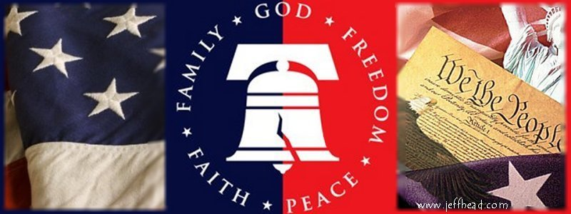

|
 |
 |
 Late on election night, November 6, 2012...actually probably early in the morning hours of November 7th at the time...well after Ohio and then Virginia were called, and then after listening to the speeches by Romney and Obama, I wrote the following and shared it with friends and groups I frequent. "God in Heaven has answered our prayers...but not the answer we hoped and prayed for. I have faith in Him, and accept His will. It just means we have to work harder, that we will probably have to endure much more, and that we have to have even more trust in Him during these difficult times. But HE IS IN CHARGE, and He knows what He is doing. God grant that we all stay true and begin to prepare now for the next mid-terms and the next presidential election.  We have been dealt a hard, crushing, depressing, wind-knocked-out-of-you, blow. Many are still figuratively gasping for breath. And that is understandable. The thought that in the wake of what we know about this administrtion and President and their horrific record and actions, that the people would willingly vote to continue it is simply astonishing, and literally breath taking..and it is also mortally dangerous for all of us and our liberty. But we are not out of the fight. Not by a long shot. 58+ million souls voted against it. Millions others stayed home. We simply have to seek God's help, humble ourselves, reprnt, re-dedicate ourselves and have the steel to devise ways of cutting through the decades-long dumbing down and patronizing of so many segments of our population. We must show them that their best interests are served by individual liberty, responsibility, accountability and less government. That will be hard to do. In many places across this land, you now have 3rd and 4th generation families who have lived nothing else and believe that the hand-out entitlement state of affairs is the norm. It's how they live day to day. Many do not have parents in the home (if they are lucky enought to have both parents) who understand the foundational values of this nation, or the economic engine and free market upon which it rests. Without parents and relatives and friend to teach them, they are left to a liberal, progressive education systems which all too often attacks and down plays those values and systems, and to an utterly biased media which they watch...when they are not playing video games or watching M-TV, that does the same. To them, anyone who threatens this state of affairs...their way of life...is an enemy. And the fact is, WE DO! We do threaten that way of life. We do so because that way of life threatenns all of us, including they themselves! We know that that very state of affiars threatens ours...and by extension, their liberty and opportunity for any prosperity, because we are the ones paying for it and we know that it is absolutely unsustainable. It leads off a cliff, which is precisely where the designers of this abject social malware want it to go, so they can sieze all power, control, and wealth for themselves in the crisis and chaos that ensues when it does go over the cliff. They are not stupid, these designers of this state of affairs, and they are prepared to continue to push it to the point of having all of us living as serfs while they amass all power and wealth to themselves.
 At their heart, that's who the Obama's, Harry Reid, Nancy Pelosi, Michale Moore, Geroge Soros, Diane Feinstein, Barney Frank, Chris Dodd, Bill and Hillary Clinton, Maxine Waters, Bill Ayers, Al Sharpton, Jesse Jackson, Bill Maher, etc., etc. are. As an example, just look how the Obama's live in the White House. Consider the billion dollars of tax-payer money that went to support their "lifestyle" just over the last year. A life style that did not include Obama's Presidential duties (mostly campaigning and playing golf), but had that family living on one hand like abject royalty during these horrible economic times, while on the other hand they tell the "masses" that they care fo them! Actions speak much, much louder than words. So, this is how I feel in the wake of this election...of this monumental loss. Hard times, potentially very hard times are coming and may be wholly unavoidable at this point. Times which may well completely humble the entire nation if, for example, the dollar goes off the cliff and the entire economy collapses to the point where commerce, banking, and transportation are massively and negatively impacted. Sadly, that is a very real potential. Such times, and the chaos, social unrest, and upheavels that would go along with it will, sadly, kill...and it will predominantly kill the poor wretches who have bought into the idea that government is the cure of all their ills, the great provider. They may never realizie that those very government programs and dependencies which they grasp to as a way of life, are the very weapons that have been crafted to destroy them. But, even in the face of those dire, worst case scenarios...we can and must fight on. God in Heaven will open the doors, in His time, for us to restore what He established here in the first place, our Constitutional Republic. We must be ready, and worthy, to step through that door when the time comes...one at a time...and grasp our liberty, our blessing and birthright for our children, and their children, and their children. In order to do so, whether it is in the next five years, or fifty, we must educate and train them (our children and grandchildren) so they, should it fall to them, will do the same. Never give in an inch. Make them fight for every bit...and then when given the opportunity, strike back and take and hold the ground we are given. As Major General Winfield Scott Hancock said at Gettysburg, upon finding a defenisble positions, "this is good ground," May we find that "good ground," in our faith, our commitment to God in Heaven and His fundamental moral principles, and in our willingness to stand up and fight, and also in our willingness to, "Wait upon the Lord," so that we might ultimately, "Rise up as on wings of Eagles."
Jeff Head
AMERICA AT THE CROSSROADS OF HISTORY OBAMA'S DISASTEROUS FIRSTS AS PRESIDENT THE PROGRESSIVE CLASS ENVY TRAIN WRECK WALKING GUNS WITH AL QUIDA IN BENGHAZI JOBS NUMBERS AND THIS ADMINISTRATION LIES
OBAMA IS FALLING AND AMERICA IS CALLING
|
 Dragon's Fury - World War Against America and the West: Following great success in the War on Terror, politicians and analysts alike thought that future global conflict was impossible...but they were wrong. Journey into a possible future where Islamic terrorists sharpen their horrific skills & ally with Red China. In such a future, can the U.S. & western civilization survive? |
 The Stand at Klamatjh Falls: How rural western farmers and their supporters stood up to entrenched environmentalism, activist judges, and agencies of the Federal Government in southwestern Oregon...and prevailed. |
BACK TO JEFFHEAD.COM
Copyright © 2012 by Jeff Head, All Rights Reserved